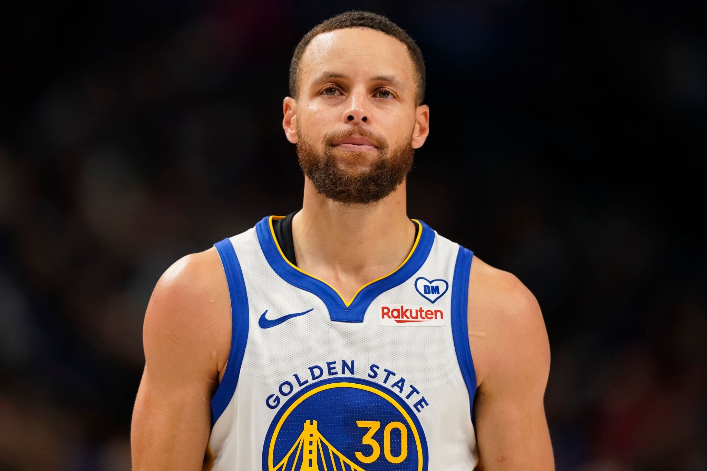

Wardell Stephen Curry II (/ˈstɛfən/ STEF-ən;[1] born March 14, 1988)[2] is an American professional basketball player and point guard for the Golden State Warriors of the National Basketball Association (NBA). Widely regarded as the greatest shooter and one of the greatest players of all time, Curry is credited with revolutionizing the sport by inspiring teams and players to take more three-point shots.[3][4][5][6] He is a four-time NBA champion, a two-time NBA Most Valuable Player (MVP), an NBA Finals MVP, an NBA All-Star Game MVP, an NBA Clutch Player of the Year, and the inaugural NBA Western Conference Finals MVP. He is also a two-time NBA scoring champion, a ten-time NBA All-Star, a ten-time All-NBA selection (including four on the First Team), and has won two gold medals at the FIBA World Cup as part of the U.S. men's national team.
Curry is the son of former NBA player Dell Curry and the older brother of current NBA player Seth Curry. He played collegiately for the Davidson Wildcats, where he set career scoring records for Davidson and the Southern Conference, and helped the Wildcats advance to the Elite Eight in 2008. He was named Conference Player of the Year twice, and set the NCAA single-season record for three-pointers made (162) during his sophomore year. Curry was selected by the Warriors as the seventh overall pick in the 2009 NBA draft.
In 2014–15, Curry won his first league MVP award and led the Warriors to their first championship since 1975. The following season, he became the first player to be elected MVP by a unanimous vote and lead the league in scoring while shooting above 50–40–90. That same year, the Warriors broke the record for the most wins in a regular season in NBA history (73) en route to the 2016 NBA Finals, which they lost to the Cleveland Cavaliers in Game 7. Curry helped the Warriors win back-to-back titles in 2017 and 2018, and reach the 2019 NBA Finals, losing to the Toronto Raptors in six games. Following injury struggles and missed playoff appearances in 2020 and 2021, Curry won his fourth championship with the Warriors and first Finals MVP award, defeating the Boston Celtics in the 2022 NBA Finals. The same season, he became the all-time leader in three-pointers made in NBA history, surpassing Ray Allen.[7]
Wardell Stephen Curry II (/ˈstɛfən/ STEF-ən;[1] born March 14, 1988)[2] is an American professional basketball player and point guard for the Golden State Warriors of the National Basketball Association (NBA). Widely regarded as the greatest shooter and one of the greatest players of all time, Curry is credited with revolutionizing the sport by inspiring teams and players to take more three-point shots.[3][4][5][6] He is a four-time NBA champion, a two-time NBA Most Valuable Player (MVP), an NBA Finals MVP, an NBA All-Star Game MVP, an NBA Clutch Player of the Year, and the inaugural NBA Western Conference Finals MVP. He is also a two-time NBA scoring champion, a ten-time NBA All-Star, a ten-time All-NBA selection (including four on the First Team), and has won two gold medals at the FIBA World Cup as part of the U.S. men's national team.
Wardell Stephen Curry II (/ˈstɛfən/ STEF-ən;[1] born March 14, 1988)[2] is an American professional basketball player and point guard for the Golden State Warriors of the National Basketball Association (NBA). Widely regarded as the greatest shooter and one of the greatest players of all time, Curry is credited with revolutionizing the sport by inspiring teams and players to take more three-point shots.[3][4][5][6] He is a four-time NBA champion, a two-time NBA Most Valuable Player (MVP), an NBA Finals MVP, an NBA All-Star Game MVP, an NBA Clutch Player of the Year, and the inaugural NBA Western Conference Finals MVP. He is also a two-time NBA scoring champion, a ten-time NBA All-Star, a ten-time All-NBA selection (including four on the First Team), and has won two gold medals at the FIBA World Cup as part of the U.S. men's national team.